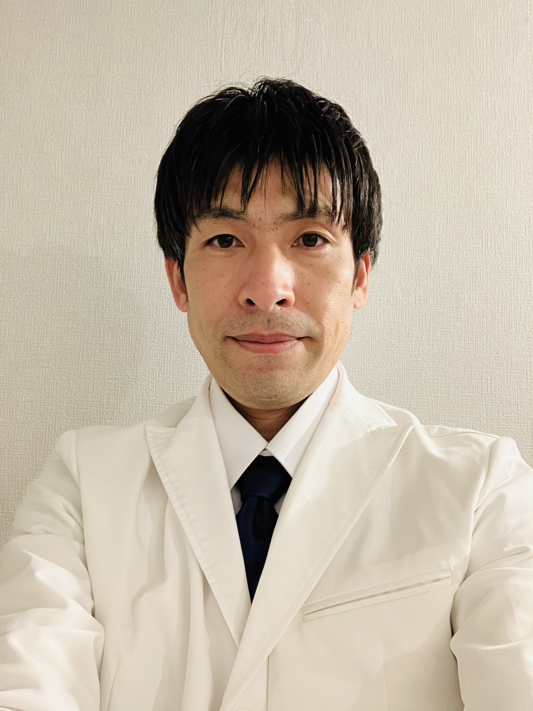
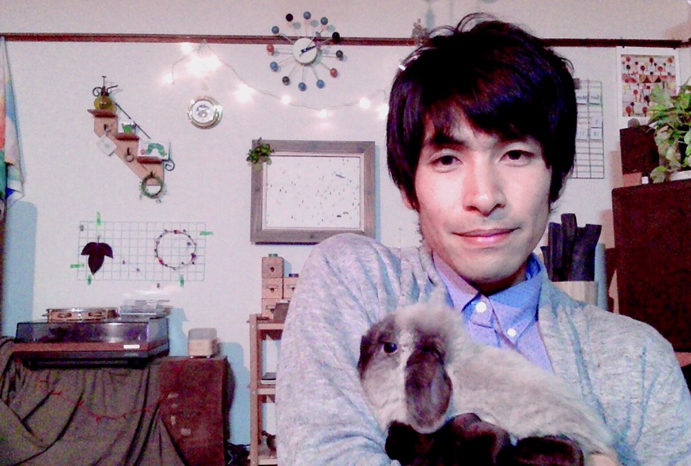

あめのみづ
あめのみづ 中山翔平

鍼灸師として分類するのであれば
どちらかといえば
東洋医学的
もしくは内科的な鍼灸師だと思います。
ただ、どんな方法でも治る方法が
最善の方法であると思っています。
私自身は福岡県の久留米市に生まれ
大学進学のため上京しました。
最初の就職先が
医療用のお薬を作る企業でした。
しばらくしてそこを離れますが
それからも医学や医術は
毎日学び続け
鍼灸の専門学校に入り直しました。
その後は
あまり自分でも考えていなかったのですが
いろんな縁があり
鍼灸学校を卒業と同時に
開業することになりました。
私が関心があることは
とにかくいらっしゃる方に
質を落とさずに
良い治療を提供したいということです。
鍼灸治療というのは
本来は非常に素晴らしい力を持った治療法です。
また、本来の治療法である漢方薬や
もしくは現代薬と併用すると
なお大きな力があります。
ただ同時にどのような治療でも
良い治療とは
そのクライアントさんのお話を聞き
その上でお身体の訴えを聞くという
細胞との会話のようなものだと私は思っています。
いらっしゃる方に
少しでも支えになれるような
そんな鍼灸師を目指してやっています。
また、
これからの医術・医学が
人ばかりでなく
動物や植物、微生物など
全ての生き物を豊かにしていく
そんな治療法に
進化していくことを願いながら
日々研鑽を積んでいっています。
免許・資格等：
鍼灸師
医薬品登録販売者（管理者要件）
温泉保養士上級
リラクゼーションセラピスト１級
その他保有
略歴:
中央大学経済学部経済学科卒
呉竹鍼灸柔整専門学校鍼灸科卒
（現在の横浜呉竹医療専門学校）

最近のこと 202５/8/27
昔に書かれた論文ですが、この論文は秀逸で
鍼灸の観点から見たら面白そうだなと思います。
とりわけ「組織のインピーダンスは、
組織に蓄えられている血液の量に量に関係するので
心拍動と共に変動する。」
というセンテンスは興味深く感じます。
五行色体表で、火を心、脳、神経とみたてて
また、深筋膜を電気を伝える経絡とみたてると
この一文だけでも興味深いのではないでしょうか？
非侵襲的で、動物にも（なんなら植物も）治療できて
数値をもった計測と、より再現性をもった
やさしい鍼灸治療法が
このあたりのりろんから
できないだろうかと思って、調べていっています。
https://www.jstage.jst.go.jp/article/jsmbe1963/20/3/20_3_140/_pdf